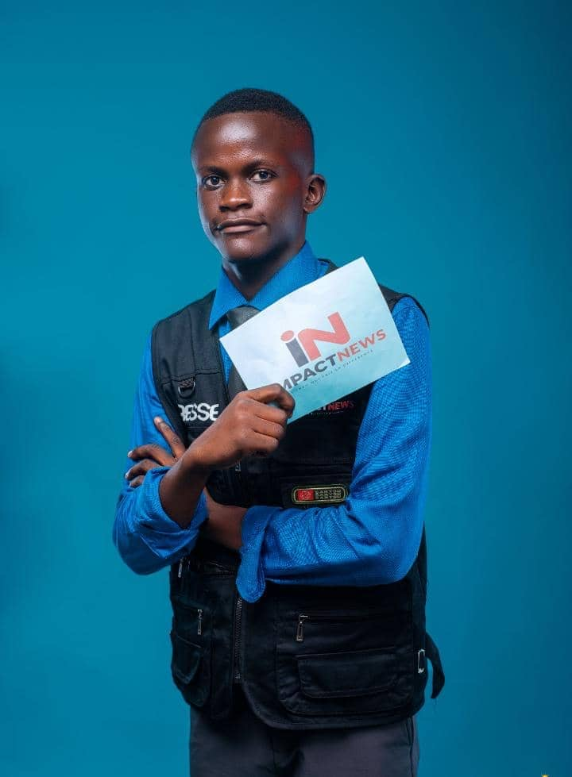
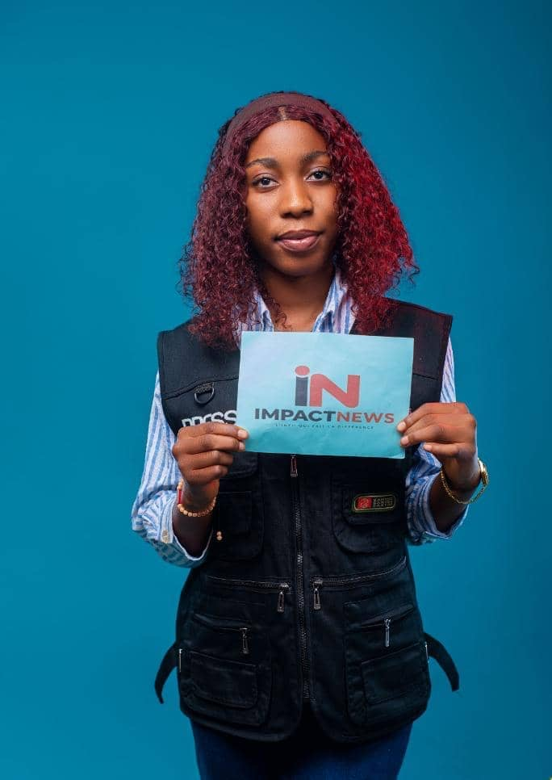
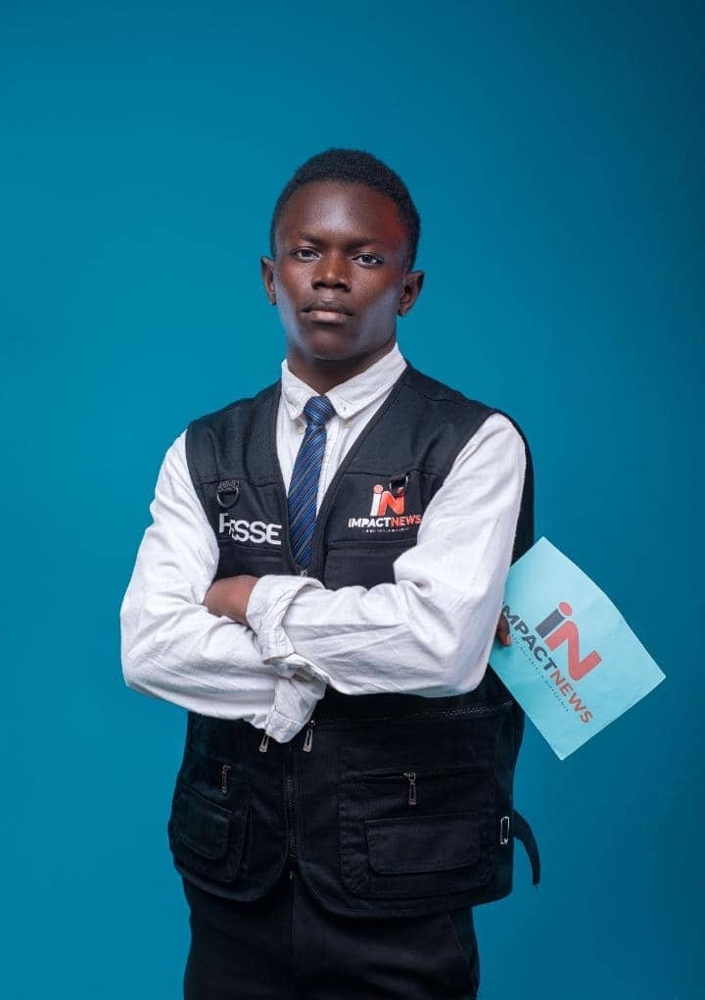
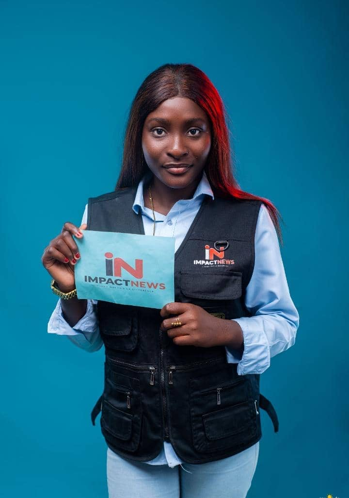
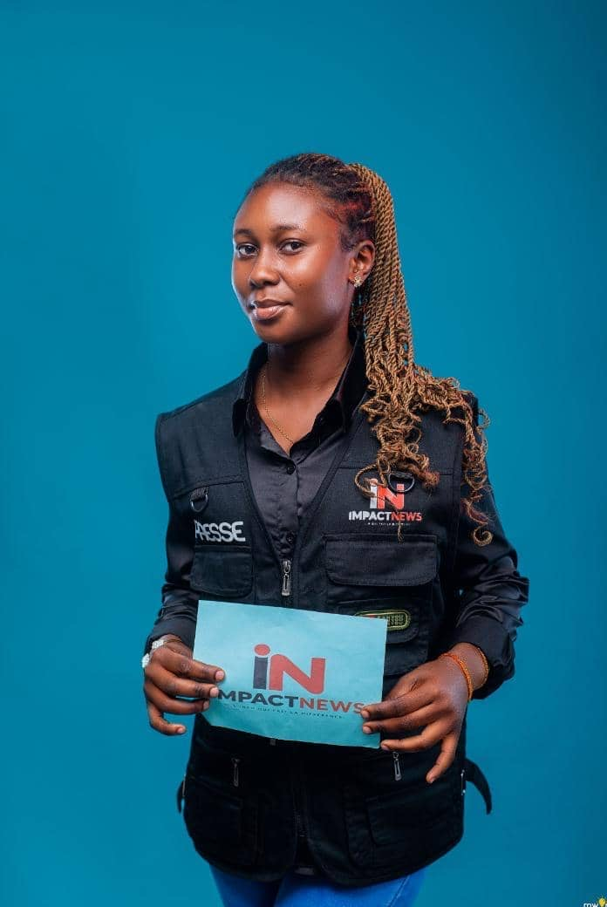
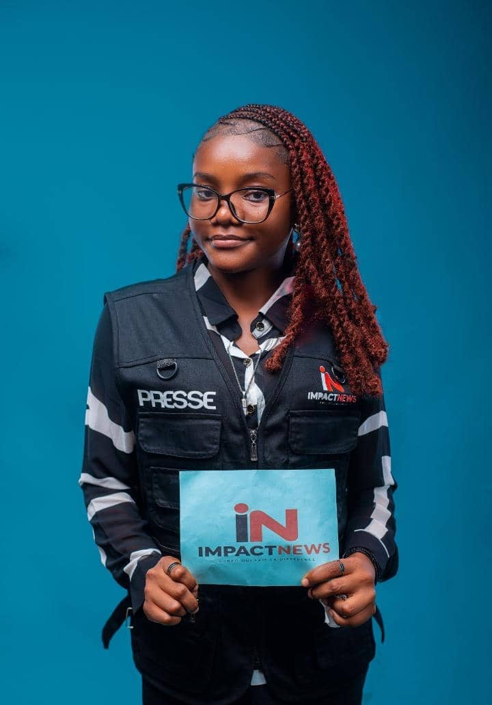
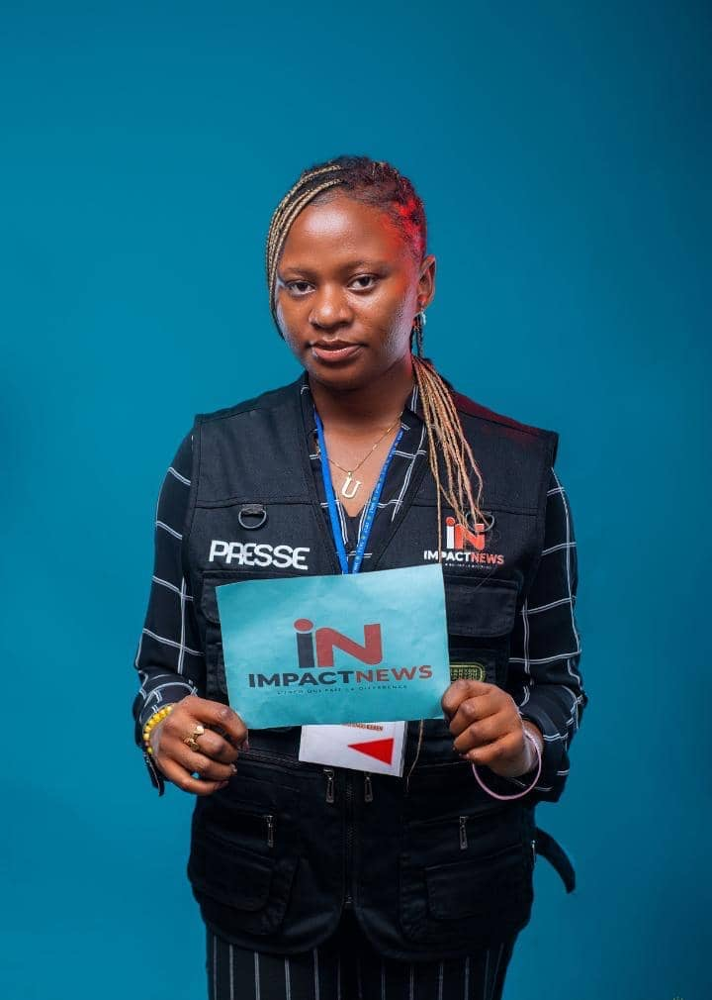

À la une de votre journéeLe dossier « Villes respirables » entre en phase d’interviews.
SLJBAMDes journalistes mobilisés
ImpactNews · Éducation
Les voix qui font bouger les campus
Reportages, témoignages et analyses au plus près de la vie académique.
ImpactNews · Terrain
Comprendre avant de commenter
Une information vérifiée, racontée avec responsabilité et nuance.
ImpactNews · Jeunesse
Les idées neuves ont une adresse
Nous donnons de la place aux initiatives, aux talents et aux engagements.
En cours
04+2 depuis lundi
À relire
07dont 3 urgents
Publiés ce mois
18+24% vs. mai
Temps d’écriture
12h40cette semaine
Vos sujets
12 sujets actifs
En écriture
Grand format • Environnement
Villes respirables : la révolution est-elle déjà en marche ?
À mesure que les épisodes de chaleur s’intensifient, certaines métropoles changent de modèle...
À relire
Analyse • Société
Ce que l’IA change vraiment dans nos rédactions
De la recherche de sources à la vérification : les outils qui transforment le quotidien...
Idée
Série d’été • Territoires
Le littoral hors saison, une autre façon de vivre la mer
Rencontre avec celles et ceux qui font battre le cœur des côtes quand les vacanciers sont partis.
Aucun sujet trouvéEssayez une autre recherche ou un autre filtre.
CALENDRIER DE LA RÉDACTION
Planning hebdomadaire.
Les rendez-vous, les livraisons et les points de validation à garder en vue pour la semaine.
Lundi · Éducation
Point de lancement du dossier “Campus & avenir”
Validation des angles, briefing des journalistes et priorités des interviews.
09h
Mardi · Terrain
Vérification des sources et relance des contacts
Contrôle des éléments, recoupements et préparation des rendez-vous sur le terrain.
11h
Mercredi · Rédaction
Premiers brouillons en ligne et relues éditoriales
Écriture, relecture et ajustements de ton avant la publication.
14h
Vendredi · Publication
Validation finale et mise en ligne
Finalisation des visuels, plan social et diffusion des contenus à la rédaction.
17h
IMPACTNEWS MEDIA
Informer pour impacter.
Un média engagé auprès de l’éducation, de la jeunesse et de celles et ceux qui construisent le monde de demain.
IN.
01
Ligne éditoriale
Dans sa première phase, IMPACTNEWS concentre principalement sa ligne éditoriale sur l’éducation et le milieu académique, avec une attention particulière portée aux réalités vécues par les étudiants et les enseignants.
Fiabilité et vérification de l’informationNeutralité et responsabilité journalistiqueRespect de la diversité des opinionsRecherche de la vérité et lutte contre la désinformationValorisation de l’éducation et de la jeunesseTraitement professionnel de l’actualité
02
Nos spécialités
Actualité académique
Universités, examens, inscriptions, activités estudiantines et réformes.
Éducation
Enjeux éducatifs, initiatives des établissements et parcours étudiants.
Journalisme de terrain
Reportages, interviews, enquêtes et témoignages.
Jeunesse & communication
Talents, leadership, conférences et événements communautaires.
IMPACTNEWS MEDIA
Celles et ceux qui donnent du sens.
Une équipe curieuse, exigeante et proche du terrain. Chaque sujet commence par une question et se termine par une information utile.

Coordination éditoriale
Une rédaction qui écoute avant d’écrire.
Nous travaillons ensemble pour vérifier les faits, croiser les regards et rendre l’actualité accessible.
Simeon Vudisa

Rédactrice en chef
Responsable Éducation
Universités · Société · Analyses
Manina bey

Reporter terrain
Correspondant Territoires
Reportages · Jeunesse · Vie locale

Journaliste
Reporter Académique
Campus · Formation · Initiatives

Intervieweuse
Voix de la jeunesse
Entretiens · Portraits · Talents

Journaliste d’enquête
Référente Vérification
Enquêtes · Sources · Fact-checking

Reporter
Chroniqueuse Société
Actualité · Témoignages · Décryptages
ESPACE COLLABORATIF
Briefs partagés.
Les angles, les sources et les idées de la rédaction réunis au même endroit.
À traiter · Éducation
La rentrée universitaire et ses nouveaux défis
Sources à vérifier, calendrier des interviews et premiers témoignages étudiants.
SL
En préparation · Terrain
Les bibliothèques qui deviennent des lieux de vie
Repérage de trois campus et contact avec les associations locales.
JB
Idée · Analyse
Former à l’esprit critique à l’ère des réseaux
Un brief à compléter avec un enseignant-chercheur et deux étudiants.